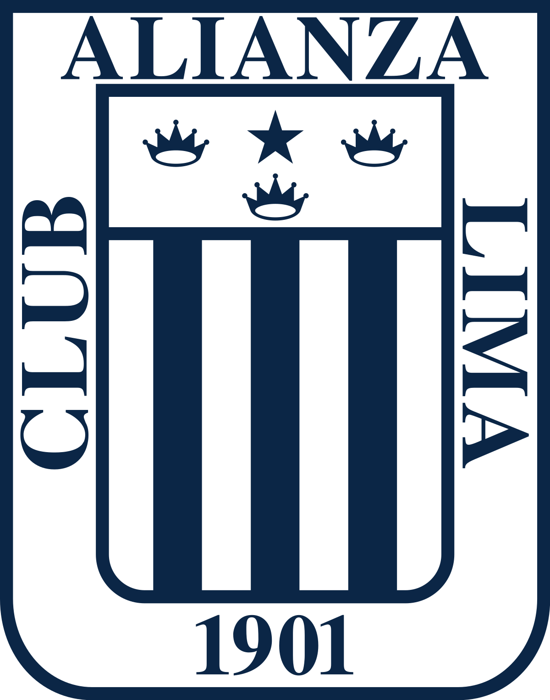
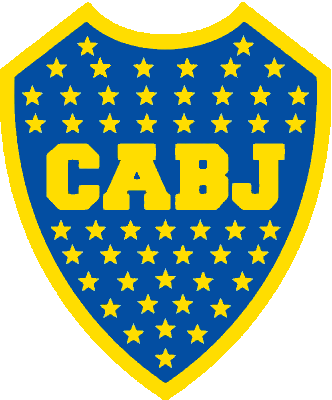

Alianza Lima
El club ALianza Lima es el equipo de futbol mas popular y tradicional de Peru siendo parte de la cultura y el pueblo peruano
Arsenal F.C.

El club de futbol Arsenal de Londres conocido como los Gunners es parte del "Big Six" de la Premier League siendo uno de los mas grandes.
Boca Juniors
El club Atletico Boca Junios es el club con mas titulos de Argetina y uno de los grandes del continente siendo este ultimo año finalista de la Libertadores
Feyenoord

Feyenoord Rotterdam es una entidad deportiva neerlandesa con sede en la ciudad de Róterdam. Fue fundado el 19 de julio de 1908 en el pub «de Vereeniging»